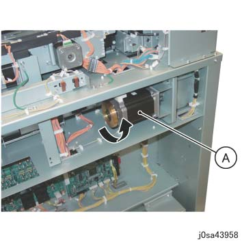
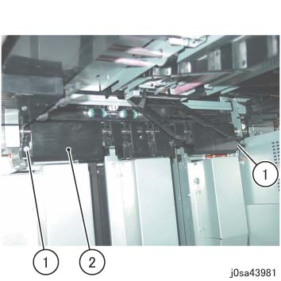
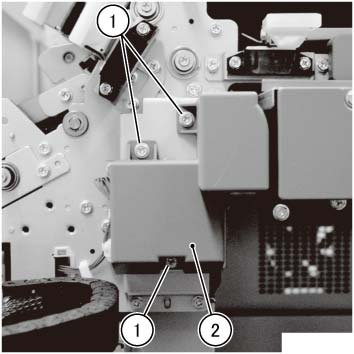
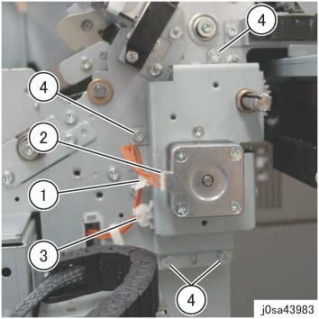
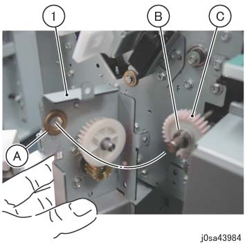
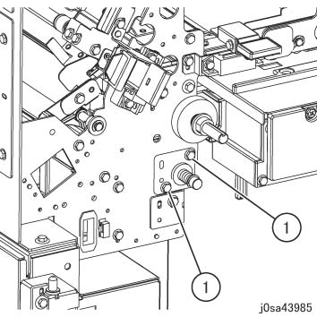
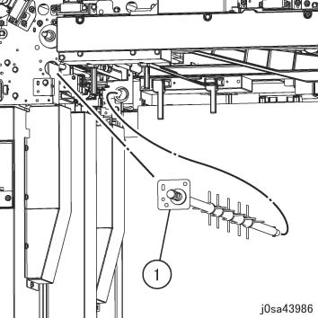
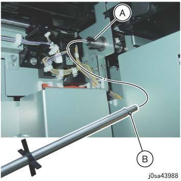

REP 74.24.2 桨轮 
参考 PL:PL 74.24
Removal

用于 电源, 检查 是否 screen 显示 进入 关闭/脱离 和 the [Energy Saving] button 停止 blinking 和 进入 关闭/脱离 by turning 电源开关 关闭/脱离. 然后, 关闭 the 主 电源 开关, 确认 the [主 电源] 灯 具有 turned 关闭/脱离, 和 然后 关闭 the Breaker 和 unplug 电源插头.
拆卸 Dolly 和 堆叠器 纸盘.
If unable to 拆卸 堆叠器 纸盘, 旋转 the disk 的 Elevator 电机 in CCW 方向 to 下方 堆叠器 纸盘 by 大约. 20 cm. (图 1)
(A) Elevator 电机

(图 1) sa43958
拆卸 上方 盖板. (REP 74.4.1)
拆卸 堆叠器 滑槽. (图 2)
拆卸螺钉（x2）.
拆卸 堆叠器 滑槽.

(图 2) sa43981
拆卸电机 盖板. (图 3)
拆卸螺钉（x3）.
拆卸电机 盖板.

(图 3) saw439023
拆卸螺钉 该 is securing 电机 支架. (图 4)
松开卡箍并拆除线束.
断开连接器.
拆卸电缆 条带.
拆卸螺钉（x4）.

(图 4) sa43983
拆卸电机 支架. (图 5)
拆卸电机 支架.
(A) Bearing
(B) Collar
(C) 齿轮

(图 5) sa43984
拆卸螺钉 该 is securing the Bearing 板. (图 6)
拆卸螺钉（x2）.

(图 6) sa43985
拆卸 桨轮. (图 7)
拆卸 桨轮.

(图 7) sa43986
安装
安装时 the 桨轮, 对齐 销 的 桨轮 到 cutout 的 桨轮 离合器 Sleeve. (图 8)
(A) Sleeve Cutout
(B) 销

(图 8) sa43988
安装时 电机 支架, 确保 齿轮 teeth 是 interlocked. (图 5)
更换后, 输入 进入 Diag. 模式 和 clear the HFSI 计数器.
EDIM1 链条连接: 960-800
EDIM2 链条连接: 961-800
执行 [后 Up / Restore NVM] 更换后 the parts 和 后 up the NVM值 of IOT1/IOT2 (Include HFSI 值) to HDD. (请参阅 [后 Up / Restore NVM])